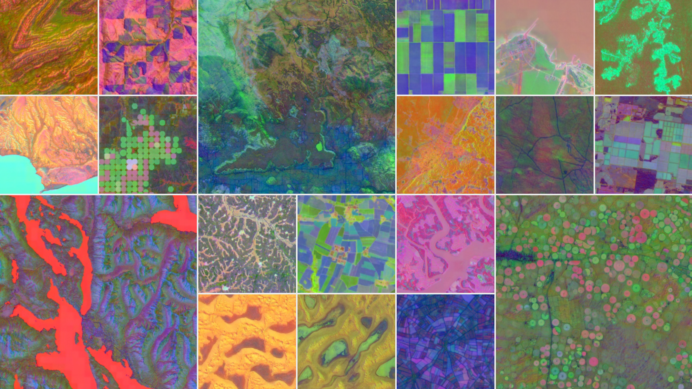
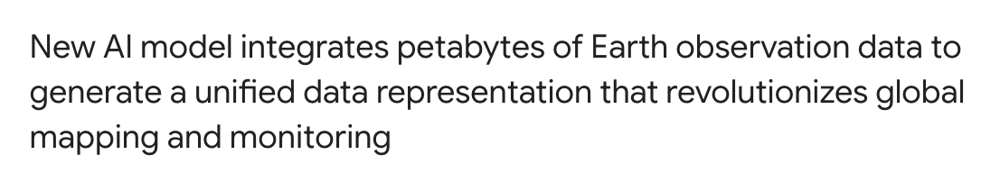
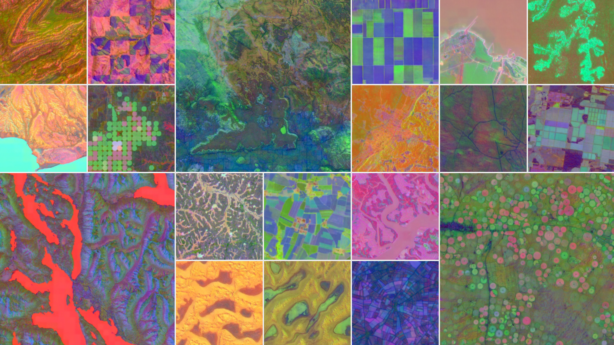
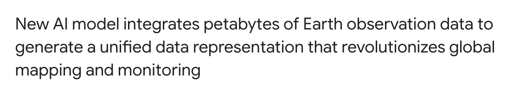

embedding earth
a critical atlas of planetary computation
Ellie Madsen
I believe we need a "Digital Earth". A multi-resolution, three-dimensional representation of the planet, into which we can embed vast quantities of geo-referenced data.
— Al Gore, 1998


The globe is on our computers.
No one lives there.
— Gayatri Chakravorty Spivak

 





The GPS information refers to, but does not simply represent, the
space it maps: it exceeds, transforms, and reorganizes that space
into another space. Not a representation of a space, but a space
itself.
— Laura Kurgan
Abstraction today is no longer that of the map, the double, the
mirror or the concept. Simulation is no longer that of a territory,
a referential being or a substance. It is the generation by models
of a real without origin or reality: a hyperreal.
— Jean Baudrillard